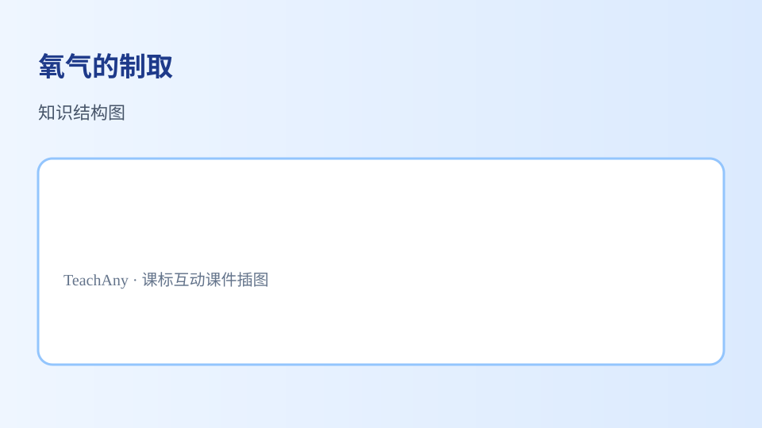

从药品选择到实验操作，掌握实验室制取气体的完整思路

医院里给病人吸氧、潜水员水下呼吸、航天员太空作业……这些场景都需要纯净的氧气。
实验室里如何高效、安全地制取氧气？选什么药品？用什么装置？
过氧化氢？高锰酸钾？氯酸钾？哪种更安全高效？
固体加热型 vs 固液常温型，怎么选？
先检测一下你的前置知识：
氧气的物理性质中，哪一条决定了它的收集方法？
条件：常温，MnO₂ 作催化剂
特点：⭐ 最常用、最安全、操作简便
条件：加热
特点：产气较快，但需加热且产物复杂
条件：加热 + MnO₂ 催化
特点：产氧量大，但混合不当有爆炸风险
在化学反应中能改变其他物质的化学反应速率，而本身的质量和化学性质在反应前后都不变的物质。
① 质量不变
② 化学性质不变
改变（加快或减慢）化学反应速率
① 催化剂不一定是"加快"反应，也可能"减慢"
② 催化剂参与了反应过程，只是前后不变
③ MnO₂ 不是所有反应的催化剂，要看具体反应
依据：反应物的状态 + 反应条件
适用：加热高锰酸钾 / 加热氯酸钾
装置：试管 + 铁架台 + 酒精灯
要点：试管口略向下倾斜，防止冷凝水回流炸裂
适用：过氧化氢 + MnO₂
装置：锥形瓶 + 分液漏斗（或大试管）
要点：可随时添加液体，控制反应速率
装置选择决策流程
反应物状态？→ 固＋固 → 需要加热？→ 固体加热型
反应物状态？→ 固＋液 → 常温反应？→ 固液常温型
原理：O₂ 不易溶于水
优点：收集的气体较纯净
判断满：集气瓶口有气泡冒出
操作要点：先将集气瓶装满水，倒扣在水槽中
原理：O₂ 密度 > 空气
优点：操作简便，可干燥收集
判断满：将带火星木条放瓶口，木条复燃
操作要点：导管伸到集气瓶底部
检验（是不是O₂）：将带火星木条伸入瓶中 → 复燃
验满（满没满）：将带火星木条放在瓶口 → 复燃
口诀：查—装—定—倒—收—离—熄（固体加热型适用"查装定点收离熄"）
| 对比项 | 过氧化氢法 | 高锰酸钾法 | 氯酸钾法 |
|---|---|---|---|
| 药品 | H₂O₂ + MnO₂ | KMnO₄ | KClO₃ + MnO₂ |
| 条件 | 常温 | 加热 | 加热 + 催化 |
| 装置 | 固液常温型 | 固体加热型 | 固体加热型 |
| 安全性 | ★★★ | ★★☆ | ★☆☆ |
| 推荐度 | 首选 | 常用 | 了解 |
① 试管口放一小团棉花（防止粉末进入导管）
② 试管口略向下倾斜
③ 先撤导管，再熄灭酒精灯（防止水倒流炸管）
① 过氧化氢浓度不宜过高（一般 3%-5%）
② MnO₂ 不宜过多
③ 可通过控制滴加速度控制产气速率
① 开始收集：等气泡连续均匀冒出时（排尽装置内空气）
② 结束收集：先将导管移出水面，再停止反应（防止水倒流）
1. 用过氧化氢制取氧气时，MnO₂ 的作用是：
2. 加热高锰酸钾制氧气，试管口需放棉花的原因是：